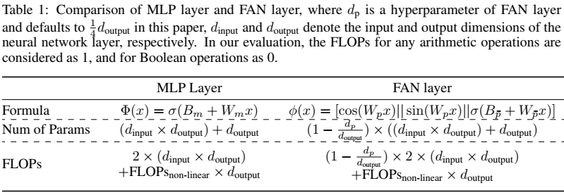

论文阅读十七：FAN：傅里叶分析网络
摘要
尽管神经网络取得显著进展，尤其是MLP和Transformer，我们发现它们在周期性建模和推理上展示潜在缺陷，例如，它们趋向于记忆周期性数据而不是真正理解周期性地底层原则。然而，周期性是各种形式推理和生成的关键特征，通过观测中的循环模式支撑自然和工程系统的可预测性。本文中，提出FAN，一个新颖的基于傅里叶分析的网络架构，增强高效建模和推理周期现象的能力。通过引入傅里叶级数，周期性自然地集成到神经网络的结构和计算过程中，从而取得更加准确的周期模式的表示和预测。作为MLP的有前途的替代，可以在各种模型中使用较少参数和FLOPs无缝替换MLP。通过大量实验，我们证明FAN在建模和推理周期性函数的有效性，以及FAN在一系列真实世界任务上的优越性和泛化能力，包括符号公式表示、时间序列预测和语言建模。论文地址
引言
现代机器学习和人工智能的繁荣与神经网络基础架构的革新密切相关。例如，多层感知器（MLP）在当今深度学习模型的基础中至关重要，具有万能近似定理保证的表达能力。最近，大模型在各种任务上的令人印象深刻的表现，通常由Transformer架构支撑。在这个背景下，社区关于神经网络的研究热情从未减退。一些新兴的神经网络在特定领域展示了显著的能力，在社区内引发广泛的讨论。
在表面繁荣之下，我们发现现有神经网络仍有一个关键问题：它们难以建模来自数据的周期性。我们通过实验性研究展示这个问题，如图１所示。结果表明，现有神经网络，包括MLP、KAN和Transformer，在拟合周期函数中面临困难，即便是简单的正弦函数。虽然它们在训练数据领域插值精通，当面对测试数据的外推挑战时，它们趋向于失败，尤其在领域外（OOD）的场景中。因此，它们的泛化能力主要由训练数据的规模和多样性决定，而不是通过学习周期性的原则执行推理。我们认为，周期性是各种推理和泛化形式的基本特征，因为它通过利用观测中的重复模式，为许多自然和工程系统的可预测性提供了基础。
本文中，我们进行一个关键研究问题：如何使得神经网络建模周期性？现有神经网络不能建模周期性的核心原因时它们严重依赖数据驱动的优化，没有显式的机制来理解数据中的潜在原则。为此，我们提出傅里叶分析网络（FAN），一种新颖的神经网络框架，基于傅里叶分析。通过利用傅里叶级数的力量，我们显式在神经网络中编码周期性模式，提供了建模数据张一般原则的方法。FAN具有作为传统MLP替代的强大潜力，七不仅展示了在周期性建模张的额外能力，而且展示了在一般任务上的竞争力或优越性。
为了验证FAN的有效性，我们从两个主要方面执行大量的实验：周期性建模和真实世界任务应用。１）对于周期性建模，相较于现有神经网路（包括MLP、KAN和Transformer），FAN在拟合基础和复杂周期函数中取得显著提升，尤其是在OOD场景中。2）FAN在真实世界任务中，展示优越性能，包括符号公式表示、时间序列预测和语言建模。实验结果表明FAN在符号公式表示任务上超越基准（包括MLP、KAN和Transformer），带有FAN的Transformer在时间序列预测和语言建模任务中，超越竞争模型（包括Transformer、LSTM和Mamba）。作为MLP的有前景的替代，FAN改进模型的泛化性能同时减少参数数量和所需要的浮点数操作。我们相信FAN有希望成为基础模型主干的重要部分。
预备知识
傅里叶分析（Stein & Weiss，1971；Duoandikoetxea，2024）是一个数学框架，将函数分解为其组成频率，揭示复杂函数中的潜在周期结构。这种分析的核心是傅里叶级数（Tolstov，2012），其将周期函数表达为正余弦项的无穷和。数学上，对于函数f(x)，其傅里叶级数展开可以表示为：
其中T是方程的周期，系数 和 通过在一个周期上积分该函数决定：
傅里叶级数的强大在于它表示种类繁多的函数的能力，包括通过周期性扩展的非周期性函数，实现频率组分的提取。构建在这种数学基础上，FAN旨在直接嵌入周期性特征到神经网络，实现各种任务撒谎给你的泛化能力和性能，尤其是需要模式和规则识别的场景。
傅里叶分析网络（FAN，Fourier Analysis Network）
本节中，我们首先通过傅里叶级数公式构建一个简单的神经网络，然后基于此，我们设计FAN，并提供其细节。最后，我们讨论FAN层和MLP层的区别。
考虑一个涉及输入输出对 的任务，其目标是识别一个函数f(x)： ，其对于所有 ，近似使得 的关系，其中 和 分别表示x和y的维度。为构建一个简单神经网络 ，表示该函数的傅里叶级数扩展，具体地，如方程（1）所述，为 \mathcal{F}\lbrace\mathcal{f}(x)\rbace ，我们可以按如下表示 ：
其中， ， 和 是可学习参数，（I）可知方程（2）种计算的 和 是定积分，（II）和（III）可知，矩阵操作的等价， 和 [\codt,\cdot] 分别表示沿着第一和第二维度拼接。
为充分利用深度学习的优势，我们可以堆叠前面的网络 来形成一个深度网络 ，其中，第i层表示为 ，保持与 种同样的结构设计。因此， 可以形式化为:
其中 表示将左边函数 应用到右边的输入x，即 。然而，我们发现直接堆叠 导致模型 的主要参数侧重于学习三角频率（ \mathcal{w}_n \eq \frac{2\pi n}{T} ），因此忽略了傅里叶系数（ 和 ）的学习，如下：
其中， 表示 \mathcal{l}_{L-1}\circ \mathcal{l}_{L-2}\circ \codt\cdot\cdot \circ\mathcal{l}_1\circ x ， 用于尽速三角频率， 用于近似傅里叶系数。因此， 拟合傅里叶系数的能力决定于 的深度，这不是希望的结果。
为此，我们基于以下原则设计FAN：1）FAN表示傅里叶系数的能力应该正比于其深度；2）任何隐藏层的输出都可以用于通过后续层使用傅里叶级数对周期性进行建模。第一点通过利用其深度，增强FAN对于周期性建模的表达能力，而第二点确保FAN中间层的特征可用于执行周期性建模。
假设我们分解 如下：
其中，
为了满足两个原则，FAN中中间层的输入必须同时应用 和 ，而不是依次应用。
最后，FAN在此基础上设计，FAN层 定义如下：
其中， 、 和 是可学习参数（超参数 和 分别表示 和 的第一个维度，该层输出 ， 表示激活函数，可以进一步增强它对于周期性建模的表达能力。
整体FAN定义为FAN层 的堆叠：
其中，
MLP层 和 FAN层 的展示如图2所示。请注意，FAN层 通过方程（9）计算，可以无缝替换通过方程（12）计算的MLP层 ，在各种模型中，使用更少的参数和FLOPs。FAN层相较于MLP层的参数和FLOPs数量，展示在表1。

实验
本节中，我们首先介绍我们实验的基准和实现细节。然后，我们验证FN在建模和推理翰周期性函数中的有效性（章节4.1）。最后，我们通过一系列真实世界任务展示FAN的优越性和泛化能力，包括符号公式表示（章节4.2）、时间序列y预测（章节4.3）和语言建模（章节4.4）。
基准 我们的实验中，主要用以下基准标记FAN：1）MLP：最经典的模型，广泛应用于各种模型的骨干。2）Transformer：因其自注意力机制而流行的模型，在各种任务中取得突出表现。3）KAN：新兴模型，专门用于符号表示，其使用b条形函数而不是固定的激活函数。4）LSTM：一种众所周知的循环神经网络（RNN），可以捕捉序列数据中的长期依赖。5）Mamba：一种新兴的选择性状态空间模型（SSM），在一些序列输入的任务中取得竞争性表现。此外，我们还在我们的比较中包括FAN的以下变体：I）FAN（Gated）：FAN的一种变体，增加门控来控制层的趋势，公式定义为 ，其中g是可学习参数。II）带有FAN的Transformer和带有FAN（Gated）的Transformer：我们替换Transformer中的每个MLP层分别为由方程（9）计算的FAN层，和FAN（门控）层。
实现细节 我们在单个Tesla A100-PCIe-40G GPU上执行我们的实验。除非特别说明，我们在实验中使用以下超参数。模型架构包含3-12层，激活函数 设为GELU，投影矩阵 的维度设置为 ，其中， 表示隐藏层的维度。我们使用AdamW优化器进行模型训练。每个任务的更多实验细节和全面设置见附录C。
周期性建模
设置 在周期性建模任务中，我们选择具有实际意义的周期函数，比较模型在周期性潜在原则学习中的表现。具体来说，我们在一个大范围内生成周期函数数据，将该范围的一部分作为训练数据，将整个范围作为测试数据，即测试数据的一部分不在训练数据范围内。在这项任务中，我们比较FAN及其变体FAN(Gated) 与MLP、KAN和Transformer。每项任务的输入都是标量。
结果 图3展示了FAN和其他基准在周期性建模中的表现。结果表明现有神经网络，包括MLP、KAN和Transformers，展示了明显地低效第建模周期性的能力。虽然它们试图拟合这些周期性函数，但其能力限制了它们在模拟大范围周期性时的表现。相反，FAN在所有这些周期性建模的任务中显著超越基准。
而且，FAN在训练数据范围内外的的测试数据上都表现得意外的好，表明它擅长建模周期性而不是仅仅记忆训练数据。
我们还分析了学习复杂周期性函数的任务上，不同模型的训练过程，如图4所示，这导致了以下发现。1）FAN在收敛速度和最终效果上均远超其他基准。2）对比FAN，FAN（门控）常常取得更快收敛，但最终性能仍然可比拟。3）随着迭代次数的增加，训练损失趋于稳定或逐渐减少，但它们的建模可能与测试数据的分布存在很大差异，导致测试损失急剧增加。这种现象进一步表明这些模型在捕捉周期性中的缺陷。
符号公式表示
设置 符号公式表示是数学和物理学中常见的任务。我们遵循KAN论文中的实验，使用同样的任务、数据、超参数和基准。除了原始基准，在这项任务中我们还包括了Transformer进行比较。
结果 图5展示了不同模型应用到数学和物理学中四个常见函数中的表现。从图5中，我们可以观测到虽然KAN在参数数量很小时仍然能够与FAN比拟，但随着参数数量增加其表现明显下降。相反，随着参数数量增长，在拟合这些函数中，FAN持续超越其他基准，包括MLP、KAN和Transformer，尽管这些函数中许多仅部分周期性或完全无周期性。
时间序列预测
设置 时间序列预先在各种真实世界应用中至关重要。在我们的实验中，我们这种任务的四个公开数据集来评估模型在时间序列顺序中的表现，包括Weather、Exchange、Traffic和ETTH数据集。对于每个数据集，我们输入96个先前的时间步，并预测后续的时间步长为 。 在这项任务中，我们选择序列模型作为基准，包括LSTM、Mamba、Transformer，具有FAN的Transformer和具有FAN（门控）的Transformer。
结果 如表2所示，我们比较具有FAN的Transformer与其他序列模型对于四个公开数据集上的时间序列预测任务中的性能。大多数情况，具有FAN的Transformer及其门控版本取得这些任务上的最好性能，相较于LSTM、Mamba和标准Transformer。与标准Transformer相比，带FAN和FAN（门控）的Transformer的改进是显著的，MSE的平均相对改进率为14.3%至15.0%，MAE的平均相对改善率为7.6%至7.9%。这些结果表明，在神经网络中引入显式周期模式编码可以提高实际应用中的时间序列预测性能。
语言建模
设置 语言建模是自然语言处理中的基础任务。在这项实验中，我们使用SST-2数据集进行语言建模，并在其测试集上评估模型性能，以及相关数据集，如IMDM、Sentiment140和Amazon Revies。这四个经典数据集全属于语义分析领域。在这项任务中，比较的是带有FAN和FAN（门控）的Transformer，以及其他序列模型，包括LSTM、Mamba和Transformer。
结果 我们报告了在四个情绪分析数据集上不同序列模型之间的性能比较，如表 3 所示。我们可以发现，我们提出的带有 FAN 的 Transformer 与标准 Transformer 和其他基线（例如 LSTM 和 Mamba）相比表现出明显优越的性能，尤其是在 IMDB、Sentiment140 和 Amazon Reviewers 数据集上的零样本跨域性能方面。带有 FAN 的 Transformer 在损失和准确度方面分别实现了高达 14.65% 和 8.50% 的相对改进，同时将参数数量减少了约 14.16M。结果表明周期性建模在跨域语言建模和情绪分析任务上具有提高有效性和泛化的潜力。
相关工作
本节中，我们概述这项工作两个最相关的方向及其相关论文。
神经网络周期性学习 周期性函数是人类社会和自然科学中最重要的基础函数。然而，常用的神经网络，如MLPs和Transformers，难以外推训练数据之外的周期性函数。这种限制源于它们的归置偏差中缺少内在“周期性”。一些前期工作提出仅使用标准周期性函数本身，或者它们的线性组合作为激活函数，仅在一些前线和简单的模型中工作良好。在此基础上，工作（Liu等，2020）引入Snake函数，即， ,作为激活函数。然而，我们发现它在一定程度上可以拟合周期性函数，但其有效性是受限的，如附录D中所示。因此，虽然一些前期研究已经尝试将周期新信息集成到神经网络，它们的实际表现和应用范围仍然严重受限。
基于傅里叶的神经网络 前期研究已经探索基于傅里叶的神经网络来增强计算任务。傅里叶神经网络（Silverscu，1999；Ngom & Marin,2021）是前层前馈网络，其使用余弦激活函数将输入映射到它们的傅里叶分解。工作（Lee等，2021）直接利用由浅层神经网络构建的傅里叶级数生成周期性信号。此外，工作（Jiang等，2022）在模型的末端引入傅里叶级数来在网络内嵌入周期性组分。这些方法一般与方程（3）拥有类似的原则，使用一个神经网络来模拟傅里叶级数公式。然而，这导致方程（5）中同样的问题，即，它们难以作为深度神经网络的构建模块，这限制了这些方法的能力。
在本文中，我们设计了FAN来解决这些挑战，它在周期性建模和一系列现实世界任务中表现得非常好。
讨论
本节中，我们主要讨论FAN的表现能力和应用范围，如下：
首先，FAN理论上拥有与MLP同样的表达能力，因为它也遵循万能近似定理，这保证了它函数近似的能力。此外，FAN通过显式结合周期性引入一个重要的增强，这在传统MLPs中是一个缺失特征。通过这项设计，FAN不仅保持MLP的能力，而且强化了它捕捉数据中周期特点的能力。因此，FAN可以被视为MLP的有力替代。
第二，在明显需要周期性建模的任务之外，FAN还在更广泛的应用中有用。这已经通过我们在真实世界的任务中被证明，例如符号公式表示、时间序列预测和语言建模，其中，FAN优于MLP和其他基准。事实上，许多机器学习任务可能隐藏着周期性的形式，即便不显式需要包含周期性，例如数学运算和逻辑推理。如果神经网络缺少建模周期性组分的能力，将损害它的学习效率。从一个较为深度的视角，周期性不仅是数据特征，还反映了结构化知识的一种形式，允许不同上下文的抽象规则和原则转移和重用。
结论
本文中，我们提出傅里叶分析网络，一种新颖的神经网络架构，用于解决周期性建模问题，它利用傅里叶级数来促进捕捉数据和推理中的底层原则。实验结果表明，FAN可以成功拟合各种基础和复杂的周期性函数，而其他方法则失败了。此外，FAN及其与Transformer的组合还展示了在多个真实世界任务中的优越性能，包括符号公式表示、时间序列预测和语言建模任务，超越现有神经网络，诸如MLP、KAN、Transformer、LSTM和Mamba。这些有前景的结果，尤其是相较于MLP更强大的性能和更少的参数和FLOPs，表明它成为基础模型关键组件的潜力。未来，我们旨在进一步提升FAN的尺度，比你高扩展它的应用范围，使其成为机器学习蓝图中一个多功能和强大的构建模块。
MLP
MLP层 定义为：
其中， 和 是可学习参数，超参数 表示 的第一个维度， 表示激活函数，MLP可以定义为MLP层 的堆叠：
其中，
FAN 和 Snake激活函数的比较